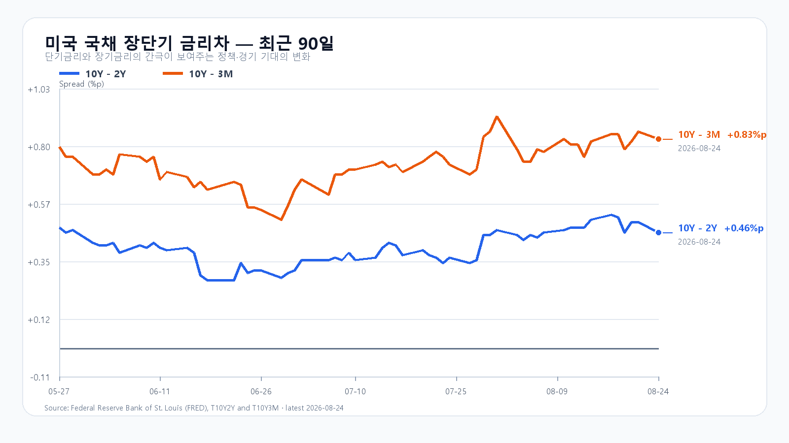

오늘의 한 문장
전날 급락을 다시 전부 더하지는 않되, 외국인 현물과 비차익 프로그램 매도가 줄어드는 것을 보기 전까지 반등도 앞서 계산하지 않습니다.
전날 급락을 오늘 재료로 또 쓰지 않는다
KOSPI는 8월 24일 3.12% 내린 6,696.96에 마쳤습니다. 삼성전자는 8.70%, SK하이닉스는 3.41% 내렸고 KODEX 레버리지는 7.33% 하락한 104,015원이었습니다.
외국인 현물은 오전 9시 30분 8,770억원 순매도에서 오후 3시 30분 3조7,553억원 순매도로 커졌습니다. 프로그램 전체도 같은 시간 7,385억원에서 2조9,644억원 순매도로 확대됐습니다. 가격보다 수급이 더 나빠진 날이었습니다.
삼성전자는 2026년 주주환원 예상액을 90조~110조원으로 제시하고 15조원 규모 보통주 취득을 공시했습니다. 취득 목적은 임직원 주식보상입니다. 시장의 실망은 전날 삼성전자 급락에 이미 반영됐습니다. 오늘 같은 재료를 새 악재처럼 다시 더하지 않습니다.
| 항목 | 확정값 | 오늘 기준 |
|---|---|---|
| KOSPI | 6,696.96(-3.12%) | 6,450 방어 · 6,750 회복 |
| KODEX 레버리지 | 104,015원(-7.33%) | 100,130원 방어 · 104,015원 회복 |
| 외국인·프로그램 | -3조7,553억 · -2조9,644억원 | 매도 축소 여부 |
| 삼성전자·SK하이닉스 NXT | 251,000원(-2.33%) · 1,625,000원(-2.75%) | 전일 종가 회복 여부 |
미국 반도체 약세는 새 신호다
S&P500은 0.3%, Nasdaq은 0.8% 내렸고 Dow는 0.3% 올랐습니다. 반도체는 더 약했습니다. QQQ -1.00%, TQQQ -3.04%, SOXX -2.67%, SMH -2.43%였고 Nvidia -2.91%, AMD -3.49%, Micron -5.83%, Broadcom -2.63%였습니다.
Apple이 중국 CXMT의 DRAM과 YMTC의 NAND를 조달하도록 미국 정부가 허용할 수 있다는 보도가 Micron 약세를 키웠습니다. 아직 공식 정책 발표는 없습니다. 한 분석은 CXMT가 저물량 Mac 한 기종에만 승인됐고 YMTC는 자격을 얻지 못했다고 지적했습니다. 가능성을 확정된 공급 전환으로 읽을 단계는 아닙니다.
정규장 뒤 시간외에서 Nvidia +0.13%, AMD -0.09%, Micron -0.50%, Broadcom +0.04%였습니다. 미국 정규장의 업종 전반 매도를 되돌릴 만한 움직임은 아니었습니다.
주가는 내렸지만 DRAM 현물은 오름세였다
TrendForce의 8월 24일 공개치에서 DDR5 16Gb 현물 평균은 0.12%, DDR4 16Gb는 0.27% 올랐고 DDR4 8Gb는 보합이었습니다. 중국 메모리 경쟁 우려와 AI 밸류에이션 부담이 주가를 눌렀지만 실제 현물 가격이 함께 무너진 것은 아닙니다.
미국 10년물은 4.70%, 30년물은 5.23%로 낮아졌고 Brent는 90.54달러로 2.3% 내렸습니다. 달러/원은 1,384.00원(-0.22%, 08:20 KST)이었습니다. 금리·유가 하락과 원화 강세는 국내 반도체 하단을 받치는 재료입니다.

오늘의 시나리오
KOSPI 6,450~6,750
전날 급락의 중복 반영을 피하되 미국 반도체와 NXT 약세가 반등 폭을 제한합니다. 외국인·비차익 매도가 줄고 6,450을 지키면 6,696.96와 6,750을 차례로 시험합니다.
KOSPI 6,750~7,000
두 메모리 대형주가 전일 종가를 회복하고 외국인 현물과 비차익이 함께 순매수로 돌아섭니다. 6,750 위에 안착해야 전일 고점 6,884.57과 7,000을 열 수 있습니다.
KOSPI 6,100~6,450
NXT 낙폭이 정규장으로 이어지고 외국인·프로그램 매도가 다시 커집니다. 6,450을 회복하지 못하면 6,400과 6,100을 차례로 시험할 수 있습니다.
2차 지지 96,740원 · 1차 지지 100,130원 · 반등 기준 104,015원 · 저항 108,710원.
전체 장중 경로는 KOSPI 6,000~7,050으로 봅니다. 오늘 대응 점수는 공격 15 · 관망 45 · 방어 40입니다.
Nvidia 실적 전까지 확인할 세 가지
미국 신규주택판매는 오늘 오후 11시, 내구재·2분기 GDP 2차 추정·7월 PCE는 26일 오후 9시 30분에 나옵니다. Nvidia 실적은 27일 오전 5시 20분, 컨퍼런스콜은 오전 6시입니다. 오늘 한국장에서는 KOSPI 6,450선, 외국인 현물과 비차익 프로그램, 두 메모리 대형주의 NXT 낙폭 회복이 더 직접적인 확인값입니다.